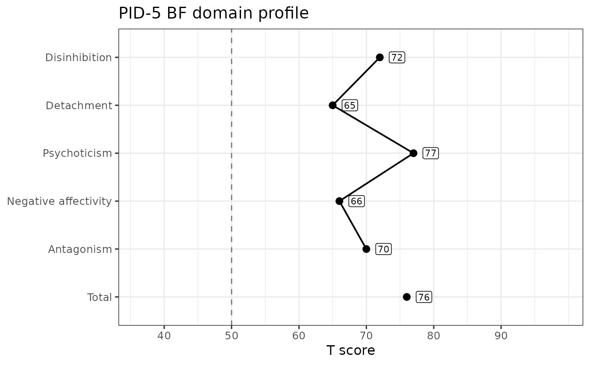

Renders one respondent's normed PID-5 scores as a profile against the published normative tables in pid_norms. The plot presents scores against norms and characterizes none of them: it carries no severity bands, no elevation thresholds, and no annotation about what a score means. Judging a profile is the clinician's job, not this package's.
Arguments
- data
A data frame with exactly one row, carrying the
_tand/or_ptlcolumns produced bynorm_pid5(). More than one row is an error – a profile plot shows one respondent.- version
Which PID-5 version the scores came from:
"FULL"(220 items),"SF"(100 items), or"BF"(25 items). Matched case-insensitively.- level
Which scales to plot.
"domain"plots the five personality domains, plus the brief form's total."facet"plots all 25 facets in panels, and is available for"FULL"and"SF"only – the brief form has no facet scores. The APA key ties three facets to each domain; those get a panel per domain, and the remaining ten, which define no domain, share a final panel rather than being dropped.- metric
Which normed metric to plot:
"t"for T scores, or"percentile"for percentile ranks.norm_pid5()returns percentiles as a proportion; this function multiplies them by 100 so the axis reads on the familiar 0-100 percentile scale.- labels
Whether to label each point with its rounded value.
TRUEby default. The labels need a figure about 7 inches wide or more: below that, a label on a score at the top of the published span runs into the edge of the panel and is cut off. Setlabels = FALSEfor a narrower figure and the points and profile line are drawn without them; the score axis then drops the extra padding it reserves for a label, so the profile itself gets that width back. This is a choice you make, not one the function can make for you – a plot is assembled before anything knows what size it will be drawn at.- prefix
The column-name prefix used when the scores were computed, as passed to
score_pid5()andnorm_pid5(). Pasted onto each scale's camelCase name to find its column.
Value
A ggplot object. Print it to draw the profile, or add further ggplot2 layers to restyle it.
Details
What the plot draws
Each plotted scale gets a point at its normed value, labelled with that
value just to its right (set labels = FALSE to drop the labels), and the
points are joined by a profile line. A single reference line
marks the normative sample's midpoint – T = 50, or the 50th percentile.
Both are definitional properties of the metrics themselves rather than
thresholds this package chose.
The score axis spans the range the normative tables actually print for the plotted scales, so the axis does not rescale from respondent to respondent and two profiles on the same version and level are directly comparable. Scales are listed top to bottom in the order their scoring table gives them, under their printed names rather than their column stems.
On the brief form the profile line stops before total: the total is an
overall elevation across the five domains rather than a sixth domain, so
joining it to the profile line would imply a comparability it does not have.
The point itself is still plotted.
Scales with no value
A scale whose normed value is NA – because the respondent's items were
missing, or because the score fell outside what could be converted – is
dropped from the profile with a warning naming it, and the remaining scales
are still plotted. A scale whose column is absent from data altogether is
an error rather than a warning: it means data was not normed at the level
being plotted.
References
Markon, K. E., Fossati, A., Somma, A., & Krueger, R. F. (2024). Understanding the Personality Inventory for DSM-5 (PID-5). American Psychiatric Association Publishing. The normative tables in pid_norms, Appendix "Normative Score Distributions" (pp. 113-219), supply every value and every axis bound this function draws.
See also
score_pid5() to compute the scores, norm_pid5() to convert them
against the normative tables, and pid_norms for the tables themselves.
Examples
# Score, norm, and plot one respondent's brief-form domain profile
scored <- score_pid5(sim_pid5bf[1, ], items = 1:25, version = "BF")
normed <- norm_pid5(scored, scores = paste0("pid_", pid_scales[["BF"]]$camelCase),
version = "BF")
plot_pid5(normed, version = "BF")
